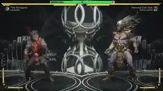

I am definitely not a master or even a top tier player of Mortal Kombat 11. In order for me to compete, I had to do my research and spend time in practice mode like most players. I couldn't have reached the level I play at without inspiration and information provided by players all around the globe. Here are the main sources of inspiration for my website and the person video I learned the combo from back in 2019.
 This image is a link to the original combo that I was introduced to in 2019. While I don't do everything this person teaches, the combo is mostly identical. I have been watching his videos since I found this one. The creator has shown me intro level combos for different characters to help me get a taste of how they may play.
Kombat Akademy is another source that I have found vital in honing my skills. I enjoy that it not only gives a list of moves and combos, but also strategies to help determine when to use each move. I typically skim this website when I want to try a new character or see how I can add to the skillset of my current favorites. It is very clean and easily digestible. Use this link to check out their tips on Liu Kang and others.